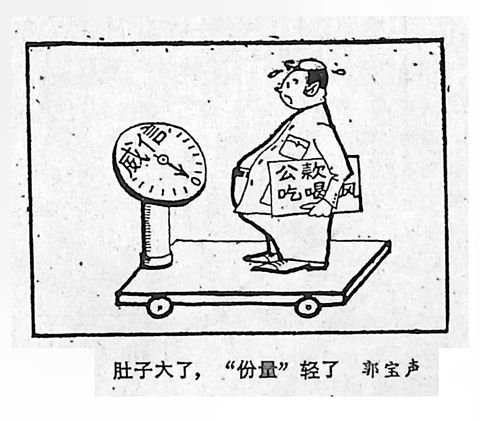
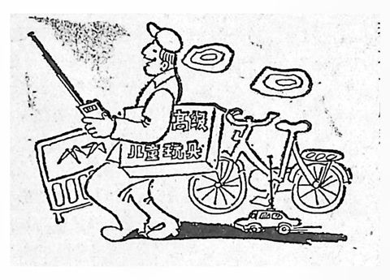
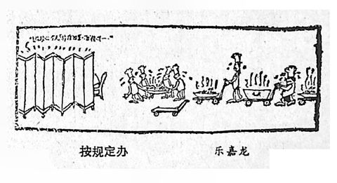
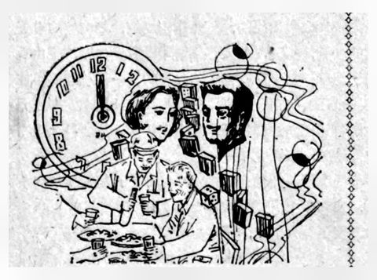
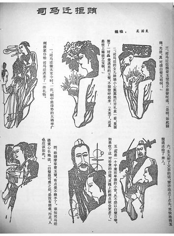
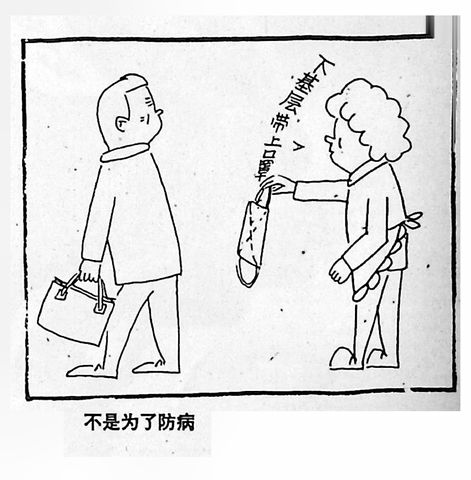

Gifts and banquets 20
-
 信息早到了 · The News Got There First
信息早到了 · The News Got There First
Feng Sen 冯森. Renshi (Personnel), 1986 no. 1 (whole no. 4), inside back cover. -
 "招贤" · "Recruiting the Worthy"
"招贤" · "Recruiting the Worthy"
Unattributed. Renshi (Personnel), 1986 no. 4 (whole no. 7), p. 11. Reprinted from Xin guancha (New Observer). -
 朝"圣" · Pilgrimage to the Sage
朝"圣" · Pilgrimage to the Sage
Wang Xiaojian 王晓健. Renshi (Personnel), 1986 no. 8 (whole no. 11), p. 14. -
 "考察" · "Inspection"
"考察" · "Inspection"
Drawn by Li Yunqing 李云庆; adapted by Qian Ren 黔仁. Renshi (Personnel), 1986 no. 11 (whole no. 14), inside front cover. -
 干杯 · Bottoms Up
干杯 · Bottoms Up
Yin Le 因乐. Renshi (Personnel), 1986 no. 11 (whole no. 14), p. 39. -
 无题 · Untitled
无题 · Untitled
Jin Dayong 金大勇. Renshi (Personnel), 1987 no. 1 (whole no. 16), p. 47. -
 机关碰壁记（诗配画） · Running into a Wall at the Office (poem drawing)
机关碰壁记（诗配画） · Running into a Wall at the Office (poem drawing)
Drawn by Wang Chunsheng 王春生. Renshi (Personnel), 1988 no. 1 (whole no. 28), p. 29. -

肚子大了，“份量”轻了 · Bigger Belly, Less “Weight”
Guo Baosheng 郭宝声. Renshi (Personnel), 1988 no. 1 (whole no. 28), p. 47. -

圈（插图） · Circles (illustration)
Unattributed. Renshi (Personnel), 1988 no. 8 (whole no. 35), p. 48. -
 水仙花开（题图） · The Narcissus Blooms (title drawing)
水仙花开（题图） · The Narcissus Blooms (title drawing)
Unattributed. Renshi (Personnel), 1988 no. 9 (whole no. 36), inside back cover. -

按规定办 · Doing It by the Rules
Le Jialong 乐嘉龙. Renshi (Personnel), 1988 no. 10 (whole no. 37), p. 47. -
 生活的小提琴（插图） · Life's Little Violin (illustration)
生活的小提琴（插图） · Life's Little Violin (illustration)
Unattributed. Renshi (Personnel), 1988 no. 10 (whole no. 37), p. 48. -
 记性 · Memory
记性 · Memory
Bian Jiahua 卞家华. Renshi (Personnel), 1988 no. 11 (whole no. 38), p. 40. -
 《崂山道士》新编 · “The Taoist of Laoshan,” a New Version
《崂山道士》新编 · “The Taoist of Laoshan,” a New Version
Drawn by Jiang Peifeng 江沛丰; poem by Ma Liang 马良. Renshi (Personnel), 1988 no. 12 (whole no. 39), inside back cover. -

熬夜（题图） · Staying Up All Night (title illustration)
Unattributed. Renshi (Personnel), 1989 no. 9 (whole no. 48), p. 40. -
 醒（题图） · Sobering Up (title illustration)
醒（题图） · Sobering Up (title illustration)
Unattributed. Renshi (Personnel), 1990 no. 2 (whole no. 53), p. 40. -

司马迁拒贿 · Sima Qian Refuses a Bribe
Adapted and drawn by Wu Guoliang 吴国良. Renshi (Personnel), 1990 no. 4 (whole no. 55), inside back cover. -
 评“币”揭晓 · Results of the “Money” Competition
评“币”揭晓 · Results of the “Money” Competition
Sun Xinyi 孙新义. Renshi (Personnel), 1990 no. 6 (whole no. 57), p. 27. -

不是为了防病 · Not to Prevent Illness
Wang Yan 王燕. Renshi (Personnel), 1990 no. 8 (whole no. 59), inside back cover. -
 “秘办” · “The Secretary's Office”
“秘办” · “The Secretary's Office”
Wang Yan 王燕. Renshi (Personnel), 1990 no. 8 (whole no. 59), inside back cover.